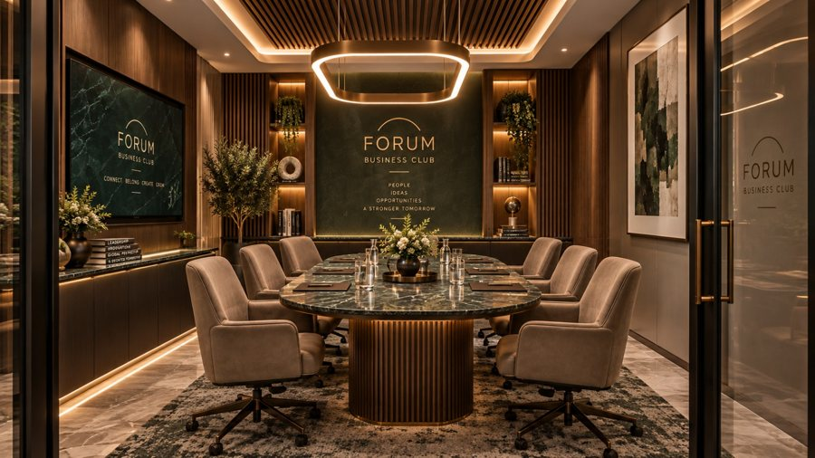
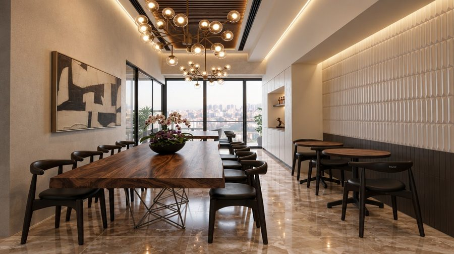
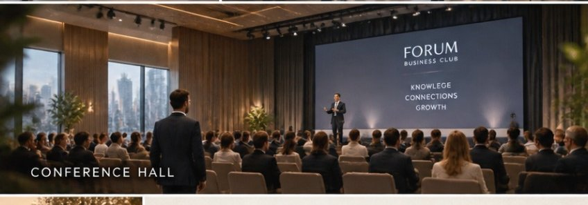
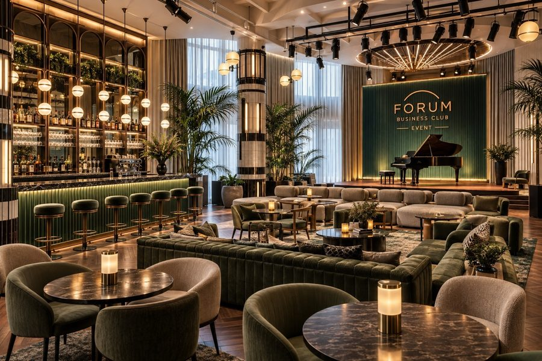
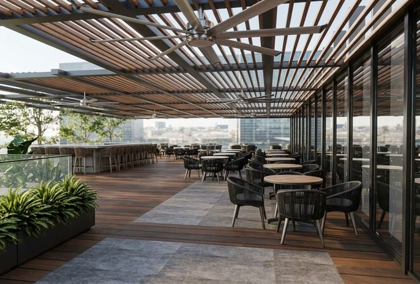
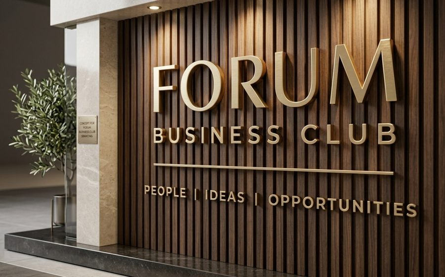
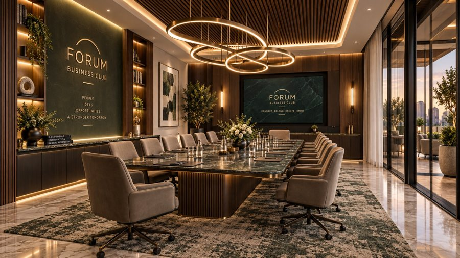
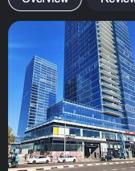

כתבנו חמישה סרטים שונים באמת, כל אחד כ-90 שניות, לקהל שמזמין כנסים ואירועים. כולם בנויים על המסלול האמיתי בקומה, לפי המפה שסימנת.
על מה זה בנוי
המסרמתחם שאין כמוהו בארץ: עבודה, כנסים, אירועים וברים במקום אחד
המשפט שלך"סטנדרט בינלאומי לפתח תקווה"
הרגעים הגדוליםהמחיצה שנפתחת לאולם, והמרפסת מתחת למגדלים
הרגשהיוקרתי ושקט · שיחה קצרה, בלי קריינות, בלי מחירים
הקהלמנכ"לים, הנהלות, מנהלי שיווק ומשאבי אנוש, מפיקי אירועים
בסוףFORUM · PEOPLE | IDEAS | OPPORTUNITIES · ב.ס.ר סיטי · האתר
חמשת התסריטים
לחץ על תסריט כדי לפתוח אותו. בסוף כל תסריט יש כפתור "בוחר בתסריט הזה".
תסריט 1
פה אחד
הנהלה מגיעה לסעיף האחרון בסדר היום, הכנס השנתי, ומגלה שהתשובה נמצאת מעבר לקיר הזכוכית של החדר שבו היא יושבת.
לפתוח את התסריט המלא ▾
הפתיחה: מעבר לכתף של היו"ר, שולחן ארוך של פנים רציניות, ושלוש מילים: "סעיף אחרון. הכנס." דמויות: היו"ר (אישה, 50+), סמנכ"ל כספים (גבר, 50+, הספקן), סמנכ"לית שיווק (אישה, 35+), שותף ותיק (גבר, 60+, מדבר מעט). עוד שלושה-ארבעה חברי הנהלה ששותקים. אורך: 1:29

0:00–0:05חדר הישיבות
מעבר לכתף של היו"ר, מראש השולחן: שבעה אנשים, אור בוקר, ניירות. דחיפה איטית פנימה.
פרופיל של סמנכ"ל הכספים בקצה השולחן, מרכיב משקפיים, עיניים בניירות. סטטי, רקע מטושטש.
סמנכ"ל כספים: "תל אביב, כמו כל שנה?"
♪ צליל פסנתר בודד
0:10–0:16חדר הישיבות
סמנכ"לית השיווק קמה. המצלמה הולכת אחריה מהגב אל קיר הזכוכית של החדר.
סמנכ"לית שיווק: "ואם השנה לא?"
♪ המוזיקה נכנסת, נמוכה

0:16–0:22הקבלה, הלאונג' ועמדות העבודה
מבט מבעד לזכוכית של חדר הישיבות: דלפק הקבלה הירוק, הלאונג', ובקצה שולחן העץ הארוך ואנשים עובדים. תנועה איטית קדימה.
(בלי דיבור)
♪ מוזיקה, המולת עבודה רחוקה
0:22–0:27חדר הישיבות
רחב מפינת החדר. סמנכ"ל הכספים שואל בלי להרים ראש. השותף הוותיק עונה בלי להרים עיניים מהכוס. מישהי מחייכת.
סמנכ"ל כספים: "והחניה?" · שותף ותיק: "מתחת לבניין."
♪ שקט קצר, ואז המוזיקה ממשיכה
0:27–0:33לאונג' ← הבר ← המעבר
היו"ר קמה ופותחת את הדלת; הקבוצה יוצאת אחריה. צילום מהגב: דרך הלאונג', ליד הבר, אל המעבר לאורך המשרדים.
(בלי דיבור)
♪ צעדים על שיש, המוזיקה מתרחבת

0:33–0:41האולם הגדול (המחיצה)
הדלתות הכפולות נפתחות אל חדר הישיבות הגדול. המחיצה המתקפלת מתחילה לנוע ונפתחת עד הסוף: במה, מסך, שורות כיסאות, ריק ומואר. המצלמה נמוכה ועולה לאט.
(בלי דיבור)
♪ רחש המחיצה, ואז פעימה אחת במוזיקה
0:41–0:48אולם הכנסים (יום הכנס)
חיתוך תואם לאותה זווית: האולם מלא, דוברת על הבמה מרחוק, לוגו FORUM על המסך. מבט מאחורי הקהל.
(בלי דיבור)
♪ מחיאות כפיים נבלעות במוזיקה

0:48–0:55האולם בערב (מצב אירוע)
אותו חלל בערב: אור חם, ספות קטיפה ירוקה, פסנתר כנף, בר, אורחים. גלישה איטית משמאל לימין.
(בלי דיבור)
♪ פסנתר חי משתלב במוזיקה

0:55–1:02דלתות האולם ← המרפסת
האורחים יוצאים מדלתות האולם אל דק העץ. המצלמה יוצאת איתם והמצלמה עולה: הפרגולה, ואז המגדלים המוארים מעל.
(בלי דיבור)
♪ רוח קלה, כוסות, המוזיקה פתוחה
1:02–1:08הבר החיצוני (U)
חברי ההנהלה עם כוסות ליד הבר החיצוני, מהגב ומהצד, מביטים למעלה. היו"ר מסתובבת חצי סיבוב (השוט המדיום היחיד, בפרופיל).
יו"ר: "אז… פה?"
♪ המוזיקה יורדת כמעט לשקט
1:08–1:13הבר החיצוני (U)
פרופיל של סמנכ"ל הכספים, מרים מעט את הכוס.
סמנכ"ל כספים: "פה אחד."
♪ חיוך בשקט, צליל כוס
1:13–1:21המרפסת, רחב
הקבוצה קטנה בפריים; הדק, האדניות, והמגדלים המוארים ממלאים את החלק העליון. המצלמה נסוגה ועולה מעט מעל הדק.
טקסט: עבודה. כנסים. אירועים. פה אחד.
♪ אקורד סיום

1:21–1:29כרטיס סיום
השלט המואר על קיר העץ, ואז הלוגו ופרטי המתחם.
הלוגו, ב.ס.ר סיטי וכתובת האתר
♪ צליל לוגו קצר, שקט
FORUM BUSINESS CLUB"פה אחד." ← עבודה. כנסים. אירועים. פה אחד.
תסריט 2
18:00–00:00
ערב אחד במתחם, מהרגע שהכנס נגמר ועד שהאור האחרון כבה, כמעט בלי מילים: אותו חלל הופך מאולם לאירוע, מהאירוע למרפסת, ואף אחד לא נוסע לשום מקום.
לפתוח את התסריט המלא ▾
הפתיחה: הסרט נפתח בסיום: "18:00" על המסך, מחיאות כפיים, והמסך הגדול על הבמה נכבה. הצופה מבין מיד שזה לא סרט על הכנס, אלא על מה שקורה אחריו. דמויות: הדוברת (אישה, 45+), המפיק מטעם החברה (גבר, 40+), המנכ"ל (גבר, 55+). צוות המתחם ברקע, אורחים. אורך: 1:29
0:00–0:06אולם הכנסים
מאחורי הקהל: הדוברת על הבמה מרחוק מרכינה ראש, המסך עם לוגו FORUM מתעמעם לשחור. סטטי, דחיפה קלה.
שעה על המסך: 18:00
♪ מחיאות כפיים נמוגות לרחש חדר
0:06–0:12דלתות האולם
הדוברת יוצאת מהדלתות מהגב, מסירה את המיקרופון מהדש. המפיק מחכה ליד המשקוף, בצד.
הלאונג' ריק, האורות כבים אחד-אחד; השלט על קיר העץ נשאר דולק. המצלמה נסוגה אל המעלית.
שעה: 00:00
♪ הפסנתר נעצר על תו אחד
1:21–1:29כרטיס סיום
טקסט, ואז הלוגו ופרטי המתחם.
הכנס. האירוע. הלילה. בלי לצאת מהמתחם. + הלוגו ופרטי המתחם
♪ שקט, צליל לוגו
FORUM BUSINESS CLUB"עכשיו הביתה." ← הכנס. האירוע. הלילה. בלי לצאת מהמתחם.
תסריט 3
שתי דקות לבמה
דוברת ראשית יוצאת מהמעלית שתי דקות לפני ההרצאה, והמצלמה הולכת אחריה בלי לעזוב, דרך כל הקומה, עד המילה הראשונה על הבמה.
לפתוח את התסריט המלא ▾
הפתיחה: אנחנו בתוך המעלית, מאחורי הגב שלה. הדלתות נפתחות על השלט המואר, ובאוזנייה: "שתי דקות." ספירה לאחור מופיעה על המסך. דמויות: הדס, הדוברת (אישה, 45+), קול המפיק באוזנייה (גבר), מכר ותיק בבר (גבר, 50+), מארחת, קהל. אורך: 1:24
0:00–0:05מעלית ← הקבלה
מתוך המעלית, מאחורי גבה. הדלתות נפתחות מול דלפק הקבלה הירוק. המצלמה יוצאת אחריה.
אוזנייה: "שתי דקות, הדס." · ספירה: 2:00
♪ צלצול מעלית, עקבים על שיש. בלי מוזיקה עדיין
0:05–0:11חדר הפודקאסט המזוגג
היא חולפת על פני הזכוכית המעוגלת; בפנים שני אנשים באוזניות ונורה אדומה קטנה. מעקב מהגב, נמוך.
ספירה: 1:50
♪ פעימה שקטה נכנסת
0:11–0:17לאונג' + עמדות העבודה
המארחת מהנהנת אליה; כורסאות בוקלה, נברשות פליז, ברקע שולחן העץ הארוך ואנשים עובדים; על הקיר הארוך השלט המואר. ממשיכים אחריה.
ספירה: 1:40
♪ הפעימה ממשיכה
0:17–0:24הבר
מעקב צידי. מכר ותיק על כיסא בר מסתובב (בפרופיל) כשהיא עוברת. היא לא עוצרת.
היא הולכת במעבר; בצד דלתות הזכוכית של עשרת המשרדים, אנשים עובדים. המצלמה מאחור.
אוזנייה: "דקה." · ספירה: 1:00
♪ הפעימה מתקצרת מעט

0:30–0:36חדר הישיבות הגדול
היא חולפת על פני חדר הישיבות הגדול (המחיצה עוד סגורה), ובו ישיבה אחרונה לפני הכנס. המצלמה אחריה.
ספירה: 0:50
♪ מוזיקה נמוכה מתחת לפעימה
0:36–0:42המעבר לאולם
שני אנשי צוות עם טאבלט חולפים לידה; כמה ראשים מסתובבים. בקצה, הדלתות הכפולות של האולם.
ספירה: 0:40
♪ הפעימה
0:42–0:49דלתות האולם
איש צוות פותח את הדלתות הכפולות: קיר של קול, כל האולם יושב, הבמה מוארת. המצלמה נכנסת אחריה.
אוזנייה: "שלושים." · ספירה: 0:30
♪ המולת קהל, המוזיקה עולה
0:49–0:55אולם הכנסים (מעבר צידי)
היא הולכת במעבר הצידי; קהל בקדמת הפריים, ראשים מסתובבים.
ספירה: 0:15
♪ ההמולה נרגעת
0:55–1:01מדרגות הבמה
היא נעצרת, נשימה אחת. יד מיישרת את הז'קט. (השוט המדיום היחיד: פרופיל, בלי דיבור.)
אוזנייה: "עשר." · ספירה: 0:10
♪ שקט כמעט מוחלט
1:01–1:09הבמה (נקודת המבט שלה)
המצלמה עוברת אותה ועולה לבמה: כל האולם, האורות, זוהר המסך, ובדלתות האחוריות המרפסת בדמדומים והמגדלים.
ספירה: 0:00 ונעלמת · הדס: "ערב טוב."
♪ חיתוך לשחור על המילה. שקט
1:09–1:16המרפסת, לילה
אנשים זורמים מהאולם אל הדק ואל הבר החיצוני; המגדלים מוארים מעל. עלייה איטית.
טקסט: נתראה במרפסת.
♪ המוזיקה חוזרת, רכה
1:16–1:24כרטיס סיום
הלוגו ופרטי המתחם.
הלוגו, ב.ס.ר סיטי וכתובת האתר
♪ צליל לוגו
FORUM BUSINESS CLUB"ערב טוב." ← נתראה במרפסת.
תסריט 4 ההמלצה שלנו
ההזמנה
הזמנה לכנס שנתי יוצאת למסע, משולחן של מנכ"ל ספקן בתל אביב ועד לשיש של הבר החיצוני בפתח תקווה, והמילים "פתח תקווה" נאמרות פעמיים, בשני טונים.
לפתוח את התסריט המלא ▾
הפתיחה: מעטפה עבה בצבע שמנת נוחתת על שולחן כהה, יד פותחת, ו"פתח תקווה?" נשאל מחוץ לפריים. דמויות: המנכ"ל האורח (גבר, 55+), עוזרת (קול בלבד), מארחת ליד הדלפק, קולגה (אישה, 45+). דוברת, קהל, אורחים. אורך: 1:25
ייווצר בהפקה שולחן עבודה (מחוץ למתחם)
0:00–0:04שולחן עבודה (מחוץ למתחם)
מלמעלה: מעטפה שמנת עבה נוחתת על שולחן כהה; הטבעה FORUM BUSINESS CLUB. יד פותחת.
(בלי דיבור)
♪ נייר בלבד. בלי מוזיקה
ייווצר בהפקה הכרטיס (תקריב)
0:04–0:10הכרטיס (תקריב)
הכרטיס נשלף ומונח. תקריב, סטטי.
טקסט על הכרטיס: הכנס השנתי · FORUM BUSINESS CLUB · ב.ס.ר סיטי, פתח תקווה · חניה בבניין · מנכ"ל (מחוץ לפריים): "פתח תקווה?" · עוזרת (מחוץ לפריים): "פתח תקווה."
♪ שקט
ייווצר בהפקה משרד (מחוץ למתחם)
0:10–0:15משרד (מחוץ למתחם)
בוקר. הכרטיס נכנס לכיס הפנימי של הז'קט; המנכ"ל יוצא מהמשרד, מהגב.
(בלי דיבור)
♪ צ'לו בודד נכנס

0:15–0:22תוך הרכב ← ב.ס.ר סיטי מבחוץ
מתוך הרכב: הכרטיס על מושב הנוסע; דרך השמשה הפודיום הכחול והמגדלים מעליו; מחסום החניון עולה. סטטי.
(בלי דיבור)
♪ איתות, מחסום
0:22–0:28מעלית ← הקבלה
תקריב על הכרטיס ביד; הדלתות נפתחות; המצלמה עולה מהכרטיס אל דלפק הקבלה הירוק והמארחת.
(בלי דיבור)
♪ צלצול מעלית, המוזיקה מתרחבת
0:28–0:35דלפק הקבלה הירוק + לאונג' + חדר הפודקאסט
המארחת לוקחת את הכרטיס; הוא מסתובב (מהגב) ומביט: נברשות הפליז, כורסאות הבוקלה, הזכוכית המעוגלת ובתוכה הקלטה, והשלט המואר על הקיר הארוך. סיבוב מצלמה איטי שעוקב אחרי המבט שלו.
(בלי דיבור)
♪ המולה רכה
0:35–0:41הבר הפנימי (יום)
מרחוק ומהצד: כוס אספרסו מוגשת לו; מדף הבקבוקים המואר; דרך הדלתות שליד הבר, המרפסת והמגדלים.
(בלי דיבור)
♪ ספל על שיש
0:41–0:49אולם הכנסים
הוא נכנס; המחיצה פתוחה, האולם מלא; הוא מתיישב בשורה האחרונה (מהגב). דוברת על הבמה, הלוגו על המסך. דחיפה איטית מהמעבר.
(בלי דיבור)
♪ קול הדוברת מעומעם, מחיאות כפיים
0:49–0:56האולם בערב (מצב אירוע)
אותו חלל בערב: פסנתר, אור חם, קטיפה ירוקה; הוא ליד שולחן בר עם שניים, מרחוק.
(בלי דיבור)
♪ פסנתר חי
0:56–1:04דלתות האולם ← המרפסת
הוא יוצא אל הדק; הפרגולה, האדניות, הבר החיצוני; המצלמה אחריו והמצלמה עולה אל המגדלים המוארים.
(בלי דיבור)
♪ אוויר לילה, המוזיקה פתוחה
1:04–1:11הבר החיצוני (U)
הוא והקולגה מהגב, כוסות ביד, מביטים למעלה. היא מטה ראש אליו.
קולגה: "נו?" · (שתיקה) · מנכ"ל: "פתח תקווה."
♪ המוזיקה יורדת לצ'לו בודד
1:11–1:17הבר החיצוני (תקריב)
הכרטיס מונח על השיש ליד הכוס, אורות המגדלים משתקפים בשיש. דחיפה איטית.
טקסט: סטנדרט בינלאומי לפתח תקווה.
♪ צליל כוס, שקט
1:17–1:25כרטיס סיום
הלוגו ופרטי המתחם.
הלוגו, ב.ס.ר סיטי וכתובת האתר
♪ צליל לוגו
FORUM BUSINESS CLUB"פתח תקווה." ← סטנדרט בינלאומי לפתח תקווה.
תסריט 5
הרשימה
מפיקת אירועים עוברת בטלפון עם הלקוח על רשימת הדרישות לכנס השנתי, ומסמנת סעיף אחרי סעיף בלי לצאת מהקומה, עד שנשאר רק דבר אחד למלא.
לפתוח את התסריט המלא ▾
הפתיחה: תקריב על מחברת, עט מצייר סימון ✓ גדול ליד השורה הראשונה, עם הצליל. "אחד יש. תמשיך." הצופה מבין את המשחק בשנייה: סעיף, חלל, סימון. דמויות: המפיקה (אישה, 45+), הלקוח (קול בטלפון, גבר, 50+). צוות המתחם ברקע. אורך: 1:26
0:00–0:05דלפק הקבלה הירוק (תקריב)
מלמעלה: מחברת על שיש הדלפק, רשימה בכתב יד. העט מצייר ✓ ליד השורה הראשונה, "ישיבת הנהלה".
היא ליד המעקה מהגב, טלפון ביד, המגדלים מוארים מעל.
לקוח: "אז מה חסר?" · (שתיקה) · מפיקה: "רק תאריך."
♪ המוזיקה יורדת לפסנתר
1:12–1:18הבר החיצוני (תקריב)
המחברת על שיש הבר החיצוני: כל השורות מסומנות, השורה האחרונה ריקה. דחיפה איטית.
טקסט (כמו בכתב יד): תאריך: ______
♪ צליל עט, שקט
1:18–1:26כרטיס סיום
טקסט, ואז הלוגו ופרטי המתחם.
הכול ברשימה. הכול בקומה אחת. + הלוגו ופרטי המתחם
♪ צליל לוגו
FORUM BUSINESS CLUB"רק תאריך." ← הכול ברשימה. הכול בקומה אחת.
למה אנחנו ממליצים על "ההזמנה"
כל הסרט בנוי על שתי מילים: "פתח תקווה?" בהתחלה, מפי מנכ"ל ספקן, ו"פתח תקווה." בסוף, על המרפסת מתחת למגדלים. הוא לא מתווכח עם החשש של האורחים, הוא פשוט מעביר אותם את החוויה. המעטפה בפתיחה עוצרת גלילה גם בלי סאונד, והסיום הוא המשפט שלך: סטנדרט בינלאומי לפתח תקווה.
הבחירה שלך
🎬
תודה! הבחירה אצלי.
מכאן אני בונה את הסטוריבורד, תמונה לכל סצנה, ושולח לך לאישור לפני ההפקה.